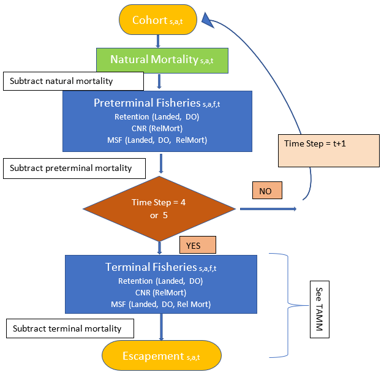

Currently, 123 stock groups are represented in Coho FRAM. Each of these stock groups have both marked (adipose fin clipped) and unmarked components to permit assessment of mark-selective fishery regulations; therefore, the current version of FRAM has a total of 246 stock units (Appendix 1). Model stocks may represent an individual salmon stock or an aggregate of stocks from the same region. Stock units represented in FRAM were chosen based on the level of management interest, their contribution to PFMC fisheries, and the availability of representative coded wire tag (CWT) recoveries in the Regional Mark Information System (RMIS). Coho FRAM includes a comprehensive set of stocks originating from Central California to Southeast Alaska and is considered to represent total West Coast production. For coho, only age three fish are included in the model.
The FRAM includes pre-terminal and terminal fisheries in southeast Alaska, Canada, Puget Sound, and off the coasts of Washington, Oregon, and California. There are 198 fisheries in Coho FRAM A unique fishery identification number and fishery name for each of the FRAM fisheries are listed in Appendix 3. Terminal fisheries in Coho FRAM include individual freshwater fisheries. FRAM can model directed fisheries, mark-selective fisheries, and non-retention fisheries, and also calculates fisheries-related incidental mortalities.
The time step structure used in FRAM represents a level of resolution that corresponds to data availability, fishery management structure, and species-specific migration and maturation schedules. Recoveries of CWTs for each stock unit during years with widespread tagging and fisheries (the reference base period, explained further in Section 3) are used to estimate model parameters such as exploitation rates. The amount of recovery data available by stock unit and fishery in the historical CWT database limit the time-step resolution of the model. Decreasing the number of CWT recoveries in a time step by making the time step shorter can increase the variance of the estimated parameters in those strata. In recognition of these data limitations, efforts were made to restrict the level of time step resolution to that necessary for fishery management purposes.
At each time step, a stock experiences natural mortality, and can be subjected to pre-terminal fisheries, and terminal fisheries.
FRAM contains five time periods for coho, covering a single calendar year (Appendix Table 5).
Table 1. Time step structure used in Coho FRAM.
| Time Step | Months |
|---|---|
| 1 | January - June |
| 2 | July |
| 3 | August |
| 4 | September |
| 5 | October - December |
Major assumptions and limitations of the model are briefly described below.
CWT fish accurately represent the modeled stock. Many FRAM stocks are aggregates of stocks that are represented by CWTs from only one production type, usually hatchery origin. For example, in nearly all cases wild/natural stocks are aggregated with hatchery stocks and both are represented by the hatchery stock’s CWT data. Therefore, for each modeled stock aggregate, it is assumed that the tagged and untagged fish are distributed and exploited at the same rates.
Each stock unit and age class is exploited as a single pool. All pre-terminal fisheries operate on the entire cohort simultaneously in each time step, and all terminal fisheries operate on the mature run.
Natural mortality is constant from year to year. Natural mortality is assumed to be constant across months for all stocks.
Stock distribution and migration is constant from year to year and is represented by the average distribution of CWT recoveries during the reference base period. We currently lack data on the annual variability in distribution and migration patterns of Chinook and coho salmon stocks. In the absence of such estimates, fishery-specific exploitation rates are computed relative to the entire cohort.
FRAM data are stored as tables in an ACCESS database. All the information needed for a “simple model run” (link to chapter in user manual) is stored in these tables, containing input as well as output data. Input data can be grouped into two main categories: static base period data and annual run data (see section 3.1). Main FRAM outputs are mortalities (landed, mark-selective, sublegal, non-retention, drop-off) and abundances (starting cohorts at each time step; abundances after natural mortalities, pre-terminal, and terminal fisheries).
FRAM input data consist of two main input types: base period reference data and annual data. Base period data remain constant until a new base period replaces the existing one. The principal base period inputs are stock-fishery specific exploitation rates. Other base period parameters include base period catches and cohort sizes. The second input type consists of annual data that can vary with each model run, such as stock specific abundance estimates, fishery catches, size limits, etc.
CWT recoveries are used to estimate model parameters such as time/area/fishery exploitation rates and maturation rates for modeled stocks. The years from which CWT recoveries are used to estimate these parameters are referred to as the reference “base period.” These parameter estimates are derived through species-specific cohort analyses. Each cohort analysis is a series of procedures that use CWT recoveries and base period catch and escapement data to “back-calculate,” or reconstruct, a pre-fishing cohort size for each stock using assumed natural mortality and incidental mortality rates. See (Model Evaluation Workgroup, 2008) for a more detailed description of the cohort analysis procedures.
Model base period data for the Coho FRAM is derived from fishery and escapement recoveries of CWTs and terminal area run size estimates for the return years 1986-1992 (Packer et al. 2007). In 2006, the previously used base period data from 1986-1991 were re-analyzed, changes were made to the algorithm, and 1992-1997 catch year data were compiled. A decision was made to only incorporate the 1992 catch year with the previous base period data, and thus the coho base period for return years 1986-1992 was generated.
Coho FRAM uses five general types of input. Three of these input types (a, b, d) are submitted annually to reflect projected stock abundances and proposed fishery regulations for the current model year. The remaining two types of input (c, e) are specifications for fishery-related mortalities that can change as more information becomes available through additional data collection or studies, but typically do not change annually.
a. Cohort Abundance: For each stock unit, an annual abundance is obtained from a source that is independent of the model, typically in the form of an ocean age-3 run size (pre-fishing age-3 abundance in the ocean after natural mortality has been subtracted). In a pre-season context these abundances come from annual forecasts, whereas in a post-season context the abundances are derived from estimates of actual returns. For coho, an initial stock abundance is needed for adult fish (age-3) by mark status.
b. Fishery Landed Catch: The model provides three options for setting the catch in a fishery: a quota, a fishery scaler, and a harvest rate (for Puget Sound and Washington coastal terminal fisheries).
Quota: Catch in the fishery is set equal to a numeric value input by the user.
Fishery Scaler: The fishery is scaled relative to the effort during the reference base period using a scaler value input by the user.
Harvest rate: Using the Puget Sound TAMM, a terminal area harvest rate can be applied to terminal area fisheries.
FRAM inputs for quota and fishery scaler can be identified as either a conventional retention fishery or a mark-selective fishery and modeled accordingly. Modeling as a mark-selective fishery initiates additional calculations to estimate catches, encounters, and mortalities differently for marked and unmarked groups.
c. Release Mortality Rates: This is the mortality associated with the release of landed fish from hook-and-line and other gear types. Release mortality rates are designated by species, geographic area, fishery type and gear type (Appendix 6). Release mortality is assessed when coho are not retained (“non-retention” or CNR fisheries) as well as in mark-selective fisheries. A number of studies have estimated release mortality for hook-and-line fisheries, and release mortality rates for troll and recreational fisheries in the ocean have been formally adopted by the PFMC. Release mortality in net fisheries with non-retention is estimated externally to FRAM and provided as an input to the model.
d. Mark-selective fisheries have two additional variations of “release” mortality that are described as either the inappropriate retention of an unmarked fish or the release of a marked fish that consequently experiences release mortality. The failure to release an unmarked fish is a user input to the model called “Unmarked Retention Error” (or Retention Error Rate) and is the proportion of the unmarked fish encountered that are retained. The release of marked fish is a user input to the model called “Marked Recognition Error” and it is the proportion of the marked fish encountered that are released; these released marked fish are then subject to release mortality. These rates are updated annually based on fishery monitoring data.
e. Other Non-landed Mortality Rates: This includes fishing-induced mortality not associated with directly handling fish. Drop-off mortality occurs when fish in sport and troll hook-and-line fisheries drop off the hook before they are brought to the vessel yet die from hook injuries. Drop-out mortality occurs when fish in commercial net fisheries are not brought on board but die from injury as a result of being netted. For simplicity, both types are referred to as drop-off mortality in FRAM. Net drop-out mortality rates vary depending on species, net type, or timing (pre-terminal or terminal) of the fishery. In general, a 5% drop-off mortality rate is applied to the landed catch to account for “other non-landed mortalities” in hook-and-line fisheries (see Appendix 6).
FRAM processes information through a time step loop, beginning with time step 1 and ending with time step 5 for coho. Within each time step, a series of four computational processes occur for each stock as depicted in Figure 1: (1) determine starting cohort size, (2) removal of natural mortality, (3) removal of pre-terminal mortalities, (4) removal of terminal fishery mortalities (time 5 only).

Figure 1. Conceptual flow chart for the Coho FRAM model.
Process 1: Cohort Abundance at the Start of the Time Step
The starting cohort size in time step 1 is a product of two parameters: (1) the base period cohort size for stock s at age 3 in the first time period (BPCohortss, a = 3) and (2) a stock and age-specific scaler (StockScalerss, a = 3). The scaler is an annual model input.
(1)
where Cohorts, a = 3, t = 1 is the initial cohort size for stock s, age 3, during time step t=1.
Coho FRAM only models age-3 fish (a=3). The starting cohort size is the projected number of age-3 fish in January of the fishing year for each stock. All coho escape in the final time step (t=5) and thus are not aged in the model.
Process 2: Natural mortality during each time step
During each time step, the stock-age cohort size at the start of the time step is decreased to account for natural mortality:
(2)
where Ma = 3, t is the discrete natural mortality rate for age 3 fish during time step t (Appendix 8).
Process 3: Pre-terminal Fishery Mortality
The remaining cohort is then subjected to removals by pre-terminal fisheries; both landed catch and non-landed mortalities associated with each fishery are calculated. FRAM simulates fishery mortalities using different processes depending upon the type of fishery: retention fishery (non-selective), non-retention fishery, or mark-selective fishery.
3a. In regular retention fisheries (non-selective), landed catch is estimated by:
(3)
where:
The FisheryScalerf, t is the foundation for the fishery simulation algorithms. FRAM can evaluate two general types of fisheries: effort-based or catch-based. For effort-based fisheries, the FisheryScalerf, t is specified by the user to reflect expected effort during the model year relative to the average effort observed during the base period. For catch-based fisheries, the FisheryScalerf, t is computed by FRAM to obtain a user-specified catch level (i.e. a quota).